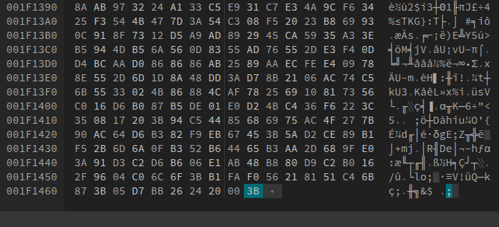
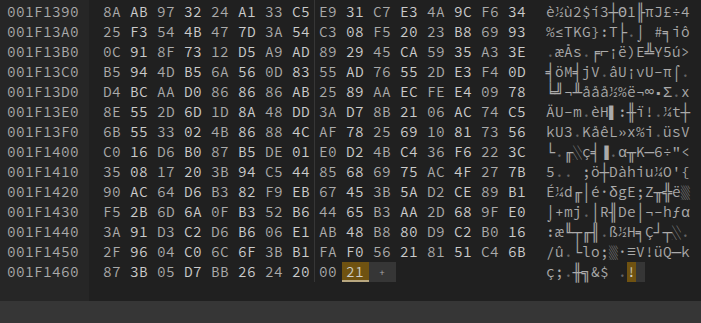

Guía para agregar un GIF grande al expositor de Workshop de Steam
Para lograr que un diseño dividido en 5 secciones verticales encaje perfectamente y sea largo, se siguen estos pasos:
- Recorte: Se divide el GIF original en 5 paneles.
- Edición Hexadecimal: Se abre cada panel en un editor como Hexed.it y se reemplaza el último byte
3Bpor21. - Subida con ayuda de la Consola: Se suben a Steam y se usa la consola del navegador con comandos para asignar el ID correcto del Workshop y forzar la aceptación del archivo modificado.
División del archivo
Se pueden usar comandos de consola como Image Magick o FFmpeg para dividir la imagen en 5 partes que entren en el expositor, o páginas web que hagan ese trabajo, como ésta que usa Image Magick y facilita dicha tarea. Se puede usar tanto un GIF animado como una imagen estática, de las dos formas se va a ver en el expositor mientras cumpla los siguientes requisitos:
- Si el GIF es animado, debe contener al menos 15 fotogramas (no estoy tan seguro de si es cierto, no lo probé)
- No debe superar los 1500px de altura, en caso de que lo haga, se debe redimensionar o comprimir de alguna forma, se verá a continuación.
- No debe superar los 5 MB de tamaño si es un GIF animado, ya que a veces, aunque se recorte en partes, sigue pesando lo mismo o incluso más, y 5 MB es el límite de Steam para subir una imágen.
Redimensionar o comprimir GIF animado
Si el GIF es demasiado grande en peso o dimensiones, se pueden usar herramientas en línea como ezgif para comprimir de diversas formas según sea necesario, en la misma página se ofrece una referencia de las opciones. Ésto debe hacerse antes de recortar el GIF, así se ahorra trabajo y todos los recortes son iguales en cuanto a compresión.
Editar GIFs
Como se mencionó al inicio, se deben editar los cinco GIFs resultantes del recorte con un editor hexadecimal, uno por uno, para cambiar el último byte con el objetivo de que Steam no termine de procesar la imagen, en caso contrario la hará cuadrada con bordes negros.
Se cambia el valor de 3B a 21 y se exportan los archivos a nuevos archivos .gif.
Antes:

Después:

Explicación del último byte del GIF
El último byte de un archivo GIF es siempre el valor hexadecimal 0x3B (el carácter ”;” en ASCII) y representa el Trailer del GIF o terminador de archivo.
Su función principal es indicar al decodificador o navegador que se ha llegado al final de la estructura de datos y que no hay más bloques que procesar. Sin este byte, algunos programas de visualización podrían interpretar que el archivo está corrupto o incompleto, ya que es el marcador oficial de finalización según las especificaciones GIF87a y GIF89a.
Por ende, el cambio del último byte de un GIF de 3B a 21 es un truco o exploit necesario para engañar al sistema de subida de Steam y permitir que las imágenes del expositor de Workshop se muestren con su altura original (larga) en lugar de ser recortadas a un cuadrado pequeño con bordes negros.
El valor 21 se usa porque representa, según el estándar GIF, un bloque de extensión introductoria, por lo que el archivo queda “inacabado”; como no se encuentra el fin del archivo, Steam no lo termina de procesar e ignora reglas de validación de dimensiones, ésto permite que el archivo mantenga su altura original.
Subida a Steam
Para subir los archivos a Steam, se debe abrir esta URL.
Según steamdb, la ID que se contiene en la URL pertenece a una aplicación de prueba de Valve, ValveTestApp767, que se usa para Steam Artwork, aunque no se va a usar para ésto, sino que se va a cambiar la ID a la que se va a subir mediante la consola de DevTools, se usa esta URL para poder acceder a la página.
Si no se hacen estos pasos, aparecerán las imágenes cargadas como Artworks en lugar de artículos de Workshop, por lo que solo se podrán ver desde el expositor de artículos, que no tiene la disposición de imágenes que se busca dividiendo la imagen verticalmente en cinco partes.
Se debe poner este fragmento en la consola:
$J('[name=consumer_app_id]').val(480);$J('[name=file_type]').val(0);$J('[name=visibility]').val(0);Consta de 3 comandos, que hacen lo siguiente:
$J('[name=consumer_app_id]').val(480);- Qué hace: Cambia el ID de la aplicación a la que se asocia el archivo.
- El valor
480: Este es el AppID de Spacewar. Spacewar es una aplicación técnica de Valve que se usa para probar las funciones de la API de Steam (Steamworks). - Propósito: Al asignar el arte a Spacewar (un “juego” que casi todos tienen técnicamente pero que no aparece normalmente en la biblioteca), se suele utilizar para evitar que el arte aparezca vinculado a un juego específico o para ciertos trucos de personalización del perfil.
$J('[name=file_type]').val(0);- Qué hace: Define el tipo de archivo que se está enviando al servidor.
- El valor
0: En el sistema de Steam, el tipo 0 corresponde a un Artwork estándar. - Propósito: Asegura que el archivo sea procesado como una imagen de arte de la comunidad y no como una captura de pantalla (screenshot), un video o un objeto del Workshop.
$J('[name=visibility]').val(0);- Qué hace: Establece quién puede ver el archivo una vez cargado.
- El valor
0: Este valor representa la visibilidad Pública. - Propósito: Configura el archivo para que sea visible por cualquier persona que visite tu perfil de Steam. Si fuera
1, sería solo para amigos, y si fuera2, sería privado.
Pasos finales
Al final, hay que cargar las imágenes en el expositor de Workshop, que hay que seleccionar de entre los expositores disponibles (si antes no estaba disponible porque no habían elementos subidos, ahora sí), y cargar las imágenes subidas en orden.